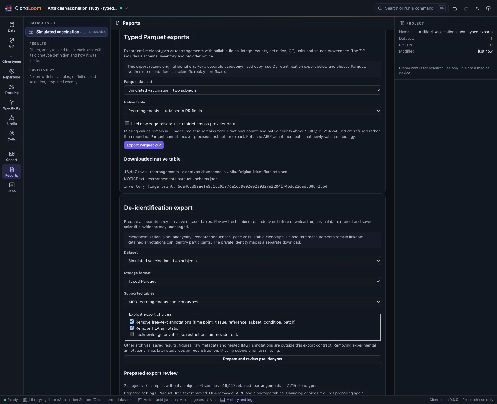
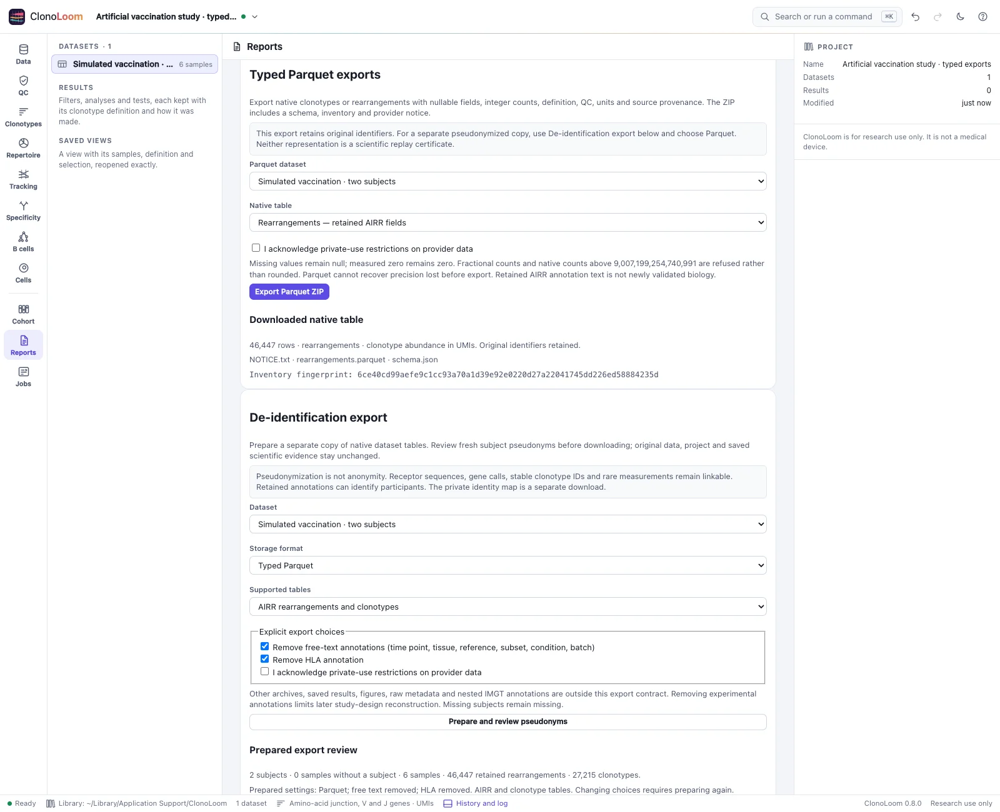
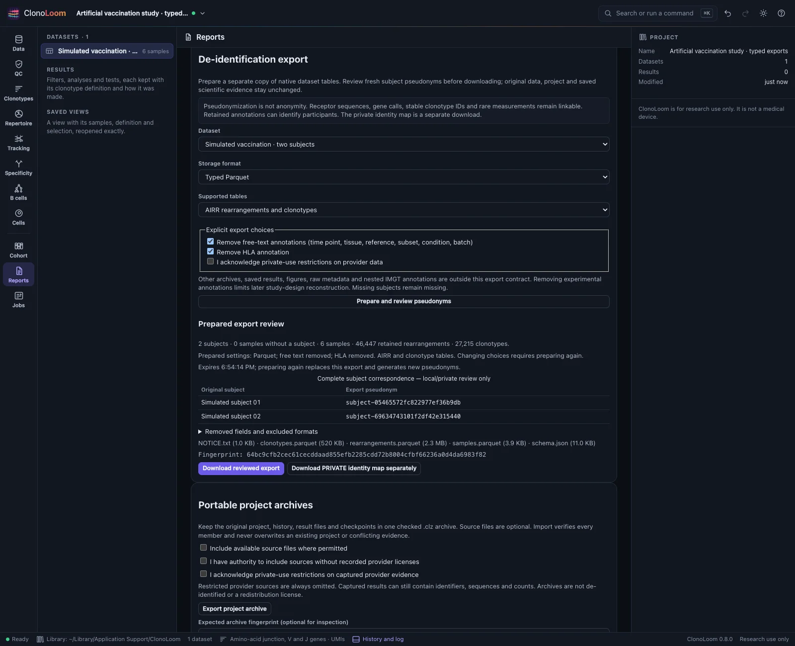
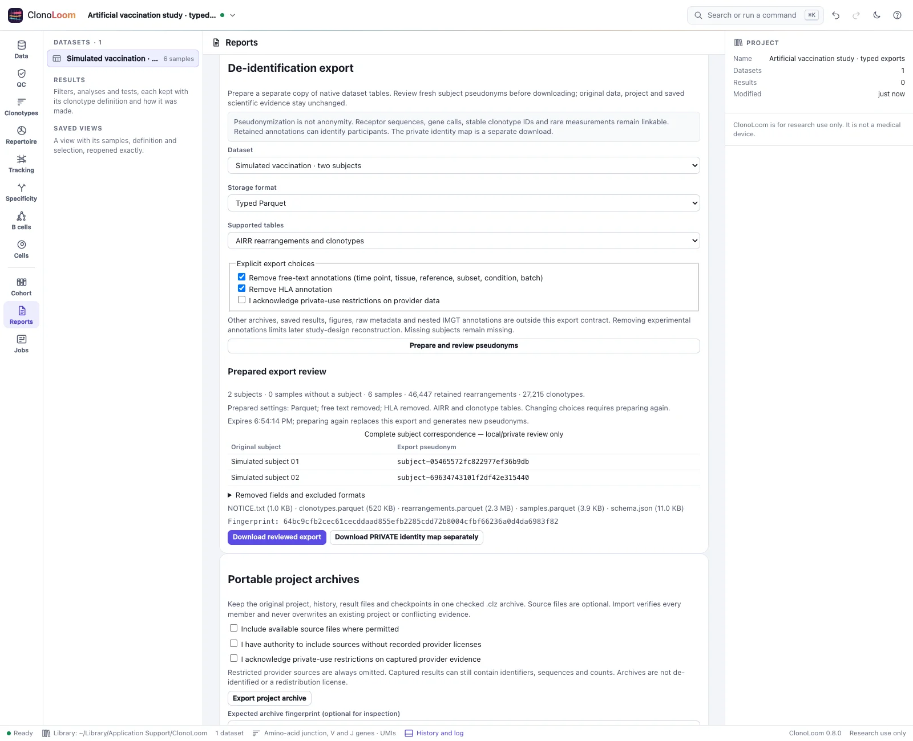

Typed Parquet exports
Carry native clonotype and rearrangement evidence into columnar analysis tools.
ClonoLoom 0.9.0. Use a matching host and clients (API 2, catalog 4, policy 1).
Choose a native table
In Reports → Typed Parquet exports, choose clonotypes or rearrangements and select Export Parquet ZIP. The Clonotypes export menu offers the same choices. The active definition, QC and invariant-species setting apply. The ZIP contains the table, a schema, provider notice and hashed inventory. Original identifiers and source provenance are retained.


Exact values within the native model
Counts use nullable signed integers; missing stays null and measured zero stays zero. Native counts must be nonnegative integral values no greater than 9,007,199,254,740,991 (253−1). Other counts refuse the export rather than being rounded. Parquet cannot recover precision lost before export. Boolean flags become true/false, while other retained AIRR annotations remain text, including invalid evidence.
Clonotype sample columns use keys such as sample_000001 with an explicit sample-name map. Clonotype and rearrangement units, effective QC and definition are recorded. Optional invariant-rule shares retain the full sample denominator and evaluable abundance; sequence-rule populations may overlap and are not established phenotypes or specificity assignments.
Choose pseudonymization separately
For a separate pseudonymized copy, choose Typed Parquet under De-identification export, make explicit free-text/HLA removal choices, then prepare and review before downloading. Public table footers and schemas carry sanitized provenance. The private identity map remains a separate download. Changing format clears the review.


Parquet is a storage format, not a privacy guarantee. Sequences, stable clonotype IDs and rare measurements remain linkable. Read the de-identification scope and limits; unsupported nested provenance still refuses the AIRR option.
Keep evidence and its limits
The footer records the versioned schema and notice. The inventory checks recorded bytes; it does not certify biological validity, authorship or replay. Ordinary source fingerprints reflect loading, not a fresh check of files on disk. Keep original evidence for exact replay. Provider restrictions remain authoritative.
This slice maps native dataset tables only. Saved analysis tables, arbitrary nested results and Parquet import are outside its scope. Bounds and cancellation prevent partial successful exports. Reviewed automation, MCP, Python and R use the same explicit permissions and host downloads.
See the complete schema, bounds, reader examples and independent validation. The implementation follows the Apache Parquet format and retains native AIRR evidence. Independent PyArrow and DuckDB readers check typed values and provenance; this introduces no new estimator or scientific plot.